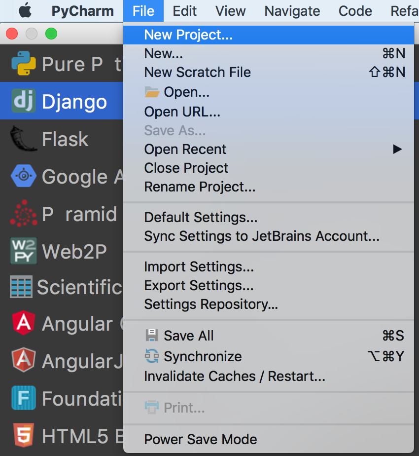
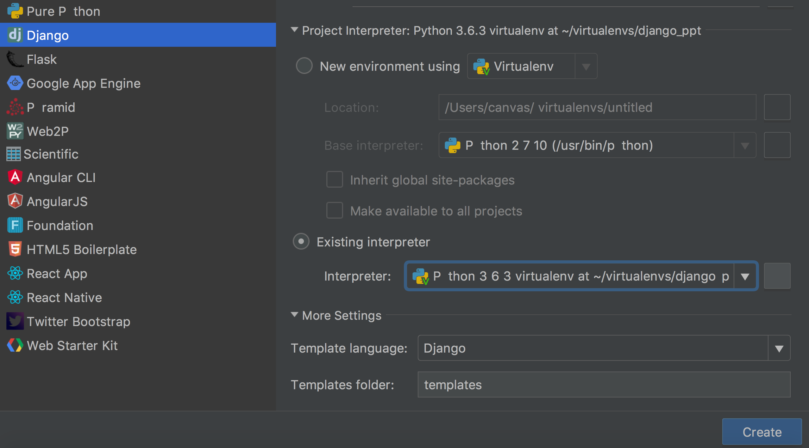
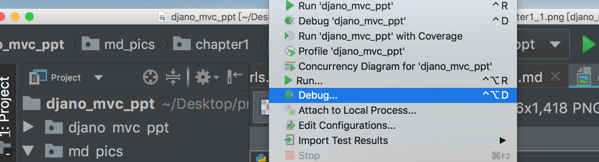
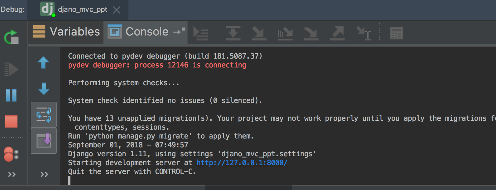
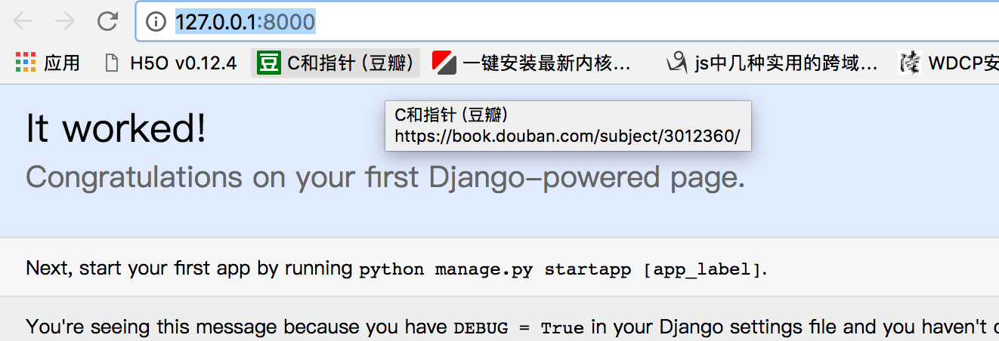

第一章:环境安装
1. 虚拟环境安装和django项目启动
1.安装python虚拟环境
```
$ pip install virtualenv
$ pip install virtualenvwrapper
$ pip install virtualenvwrapper-win (windows系列)
$ export WORKON_HOME=~/Envs
$ mkdir -p $WORKON_HOME
$ source /usr/local/bin/virtualenvwrapper.sh
```
虚拟环境位置文档位置
- 注意点 virtualenv是初级的工具 只能用在你当前文件夹的目录下面去新建
- wrapper所带的 mkvirtualenv 和 workon命令可以让你在任何地方管理虚拟环境 不用考虑文件夹位置
2.新建一个虚拟环境 激活虚拟环境 并且安装django 查看安装的django版本
```
virtualenv ruimi_django -p python3.6
source ruimi_django/bin/activate
pip install django==1.11
python -m django --version
```
3.pycharm安装django环境
- 在pycharm中选择newproject django
- 选择虚拟环境(你在本地建好的虚拟环境)
- 点击create,新建成功
 
4. 命令行安装django
使用命令行创建django 效果等同于pycharm 其实pycharm的原理就是去帮你执行这些命令而已
我们需要先切换到有django的虚拟环境才行
$ django-admin startproject test
通过django创建第一个app和命令配置文件说明
1 通过django 创建第一个app
django-admin startapp movies
有两个djano_mvc_ppt 第一个是总目录 第二个djano_mvc_ppt是项目的配置目录 settings urls 路由就在里面。他是定义整个项目的配置路由等。 我们刚才新建的是app目录是单独的功能目录,比如用户信息就可以新建一个目录来表示。在app目录里面我们去定义视图,模型等等。这个在后面章节会讲到。
2 启动django
命令行来启动django
- python必须是我们的django环境里面的python程序
- manage.py是我们django项目目录下面的manage.py
runserver是启动django 后台服务的命令 后面跟上ip和端口即可
python manage.py runserver 0.0.0.0:8000
pycharm 启动django项目
- debug模式, 使用debug模式启动django,我们可以打断点,程序过来以后,就能截取到值
- run 模式,那么程序只会执行,不会有断点查看功能 
最后 我们可以在下方 看到运行的状态

启动完成后我们就可以查看启动是否成功了

为什么使用1.11版本
- 2.0版本的lts(long time serve)目前还没有出来,到2019年我们就可以顺利使用django 2.0啦